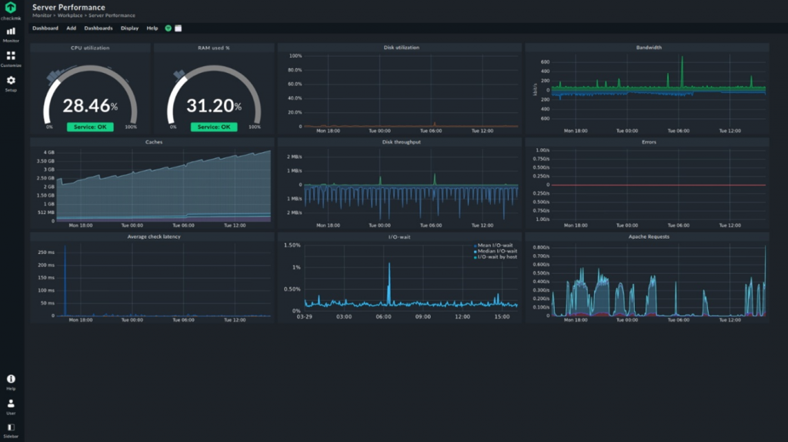

Optimización de Rendimiento — DevAlment
Ajustes avanzados para maximizar el rendimiento de tu servidor o red

Rendimiento al máximo nivel
Servicio profesional de optimización de rendimiento para servidores, redes Minecraft, webs y sistemas Linux. Ajustamos cada parámetro del sistema, red y software para conseguir una experiencia más fluida, estable y rápida.
Mejoras incluidas
Compatibilidad y herramientas
Compatibilidad total con entornos Pterodactyl, Debian y Ubuntu Server. Además, se incluyen herramientas de monitoreo como htop, Netdata y Grafana para seguimiento de recursos.
- Logs y benchmarks comparativos antes y después
- Automatización de mantenimiento con scripts personalizados
- Optimización de arranque y tiempos de carga